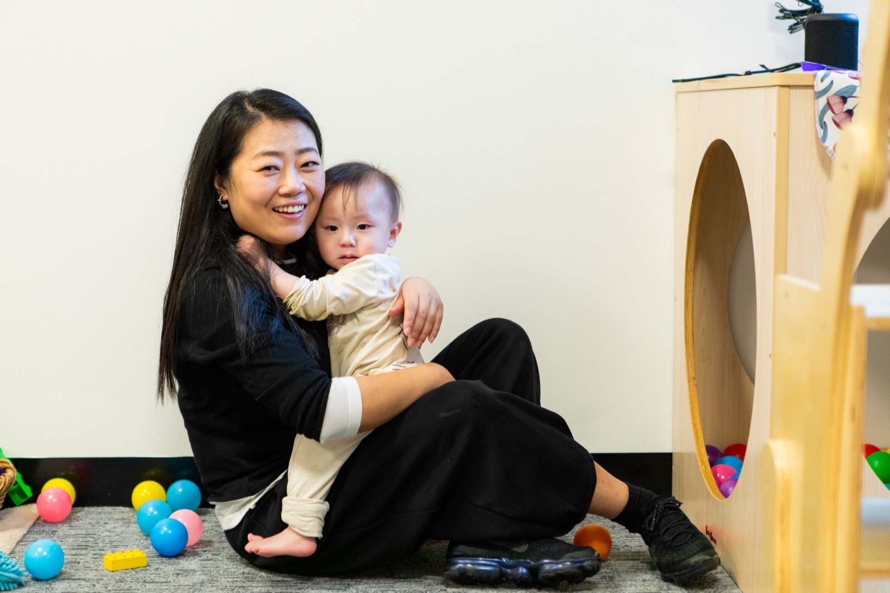

Maidenhair
Nursery, 6 weeks to 2 years
- 12 places across two small groups
- One educator to three children, above the required one to four
- A dedicated sleep room with cots and floor beds

Babies need one steady person, so each child in Maidenhair has a primary carer. The same educator settles your baby, learns their cues, does their bottles and nappies, and writes to you at the end of each day. Sleep follows your child's own rhythm, never a roster, and you can ring at any point of the day to hear how things are going.